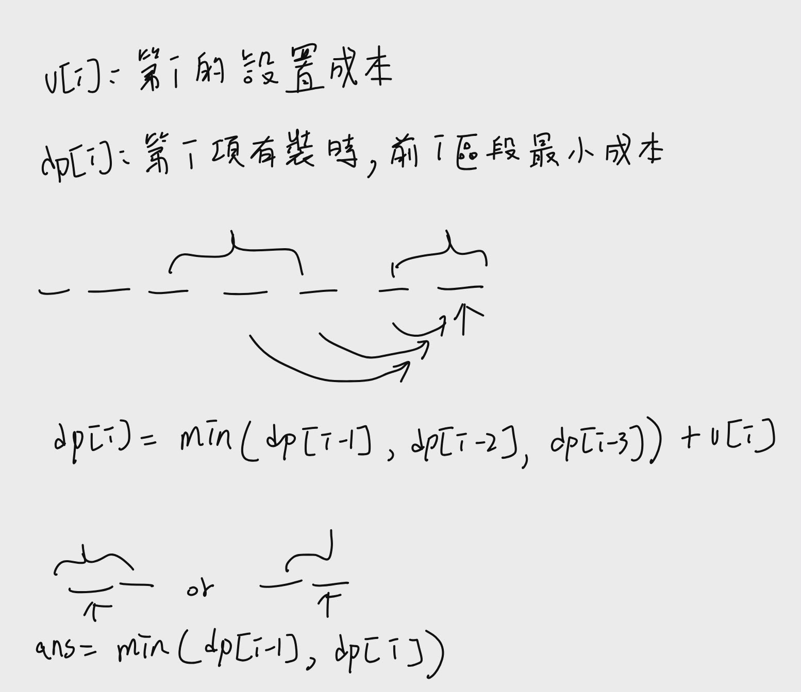
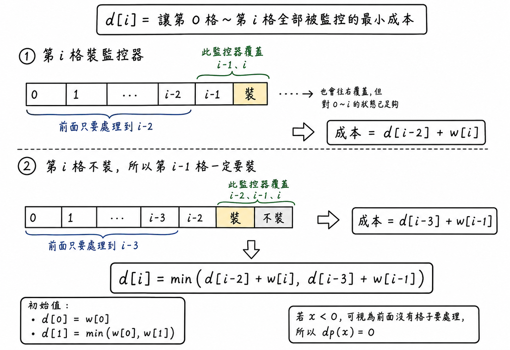
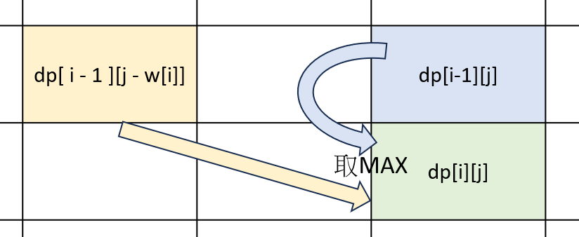
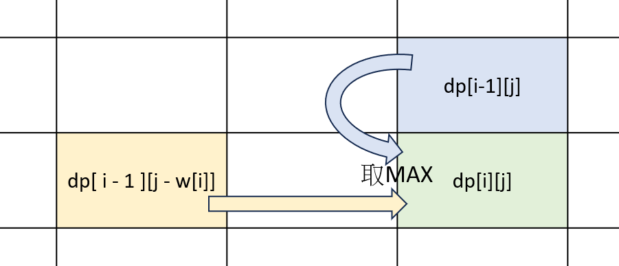
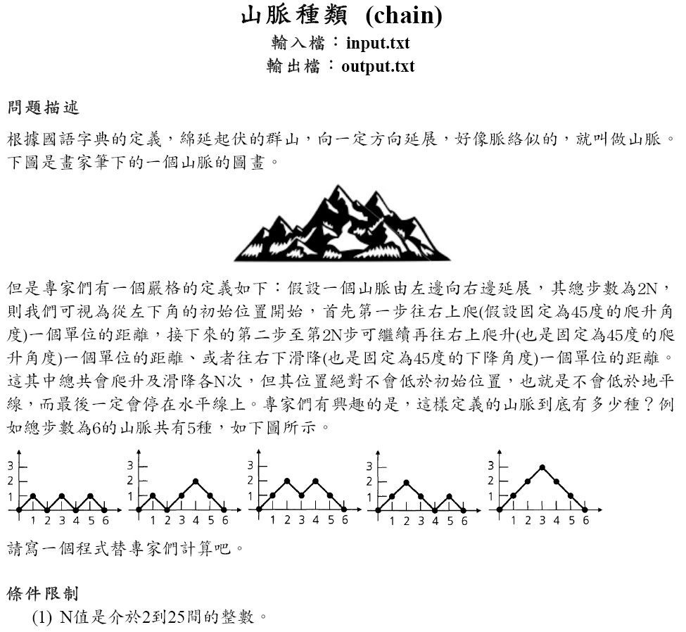
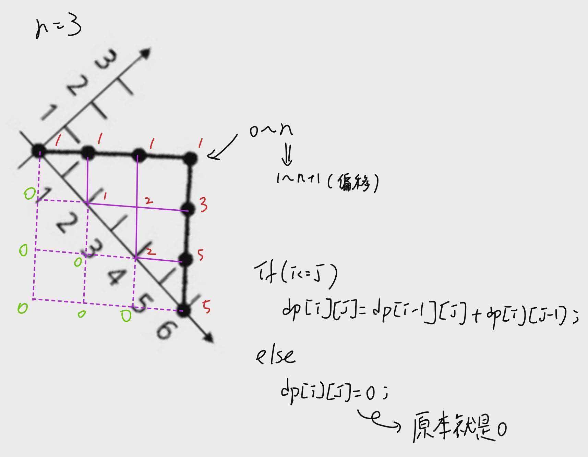
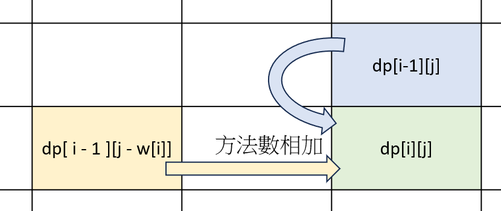
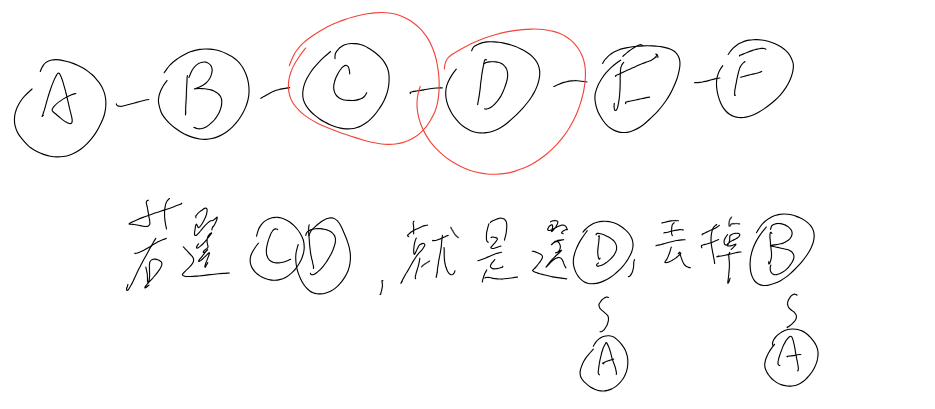

動態規劃(dp)
技巧
1.要先定義「狀態」而且要精準、謹慎的定義，如：在甚麼情況下的…，當選或是不選…
2.決定如何「轉移」(寫遞迴式)
通常的解決原則就是把子問題加條件，或是將子問題依照不同的條件再進一步分類。
統整
背包問題
a343: P-6-9. 大賣場免費大搬家
d133. 00357 - Let Me Count The Ways
d212. 東東爬階梯
P-6-1. 小朋友上樓梯最小成本加條件背包問題
b589-超級馬拉松賽- 計算數量背包問題
2023永春高中校內資訊學科- LIS 最長遞增子序列
P-6-15-一覽衆山小- LCS 最長共同子序列(DNA)
P-6-7-LCS
d231.97北縣賽-2-基因序列密碼問題(LCS類似題)
d242-00481—What-Goes-Up- 連續元素的和
d784-一、連續元素的和- 特殊：
d052-11456—Trainsorting- topdown-dp：
P-6-1. 小朋友上樓梯最小成本
I. 仁者無敵 1.3- 紀錄切換點：需要紀錄中間如何走、記錄拿取的東西。
P-6-1. 小朋友上樓梯最小成本
I. 仁者無敵 1.3
Top-down memoization
這是一種dp方式
透過陣列存取已經運算過的值，透過遞迴執行程式
換句話說
就只是在原本的遞迴上面加入一個判斷
我們可以先陣列v[10]={0}全部都是0，然後遞迴的時候判斷v[i]是否大於0
如果大於0(已經被賦予數值)就取用v[i]的數值
習題
題目的分類往往有很多種，主要看目的何在而分類，這裡我們以便於理解與學習來分類。 一個 DP 如果狀態有 O(nx)而轉移式涉及 O(n y)個狀態，一般可稱為 xDyD 的 DP，例如 小朋友上樓梯是 1D0D 的，因為有 n 個要算，每次算 f(i)只涉及 2 個 f(i-1)與 f(i-2)。方格路徑的問題則是 2D0D，因為有 n 2(假設 m=n)個要算，每次只需要 2 個(左方 與上方)。當然也有一些 DP 不在這個分類中。
1D0D
P-6-1. 小朋友上樓梯最小成本
題目：https://judge.tcirc.tw/ShowProblem?problemid=d066
小朋友玩上樓梯遊戲，每一步可以往上走一階或兩階，開始位置在第 0 階，從第一階開始每階都有一個數字，踩在第 i 階，分數就要扣第 i 階的數字，
請問走到第 n 階的最少的扣分是多少。
第一行是正整數 n 。
第二行有 n 個正整數，依序代表第 1 階開始的數字，
數字間以空白隔開。 n≤1e5 ，每階的數字不超過 1e4。
範例輸入：
8
2 1 1 7 3 2 9 2
範例輸出：
9
1.狀態
所求為「到第 n 階的最少的扣分是多少」，所以直接定義f[i]為到達第i階的成本即可
2.最後一項
我們要做的事情是「選擇他會走到的階梯」
他到達終點時，前一個階梯會選擇那些位置呢?
他會選擇從前兩階上來或是前一階上來，所以轉移式為：
n=n+min(n-1,n-2)(偷懶寫法)3.邊界
從n=n+min(n-1,n-2)可知，要讓所有數字都大於0，n的條件為(n>=2)，所以n<2的都要先定義。
#include <bits/stdc++.h>
using namespace std;
#define int long long
signed main() {
int n;
cin >> n;
vector<int> v(n + 1);
for (int i = 1; i <= n; i++) {
cin >> v[i];
}
vector<int> dp(n + 1);
for (int i = 0; i <= n; i++) {
if (i <= 2)
dp[i] = v[i];
else
dp[i] = min(dp[i - 1], dp[i - 2]) + v[i];
}
cout << dp[n];
return 0;
}
#include <bits/stdc++.h>
using namespace std;
#define int long long
signed main() {
int n;
cin >> n;
vector<int> v(n + 1);
for (int i = 1; i <= n; i++) {
cin >> v[i];
}
for (int i = 3; i <= n; i++) {
v[i] += min(v[i - 1], v[i - 2]);
}
cout << v[n];
return 0;
}
#include <bits/stdc++.h>
using namespace std;
#define int long long
vector<int> v;
map<int, int> mp;
int dp(int x) {
if (x < 2) return v[x]; // 邊界
if (mp.count(x)) return mp[x]; // 如果有
return mp[x] = min(dp(x - 1), dp(x - 2)) + v[x]; // 沒有，轉移
}
signed main() {
// dp[i] = max(dp[i-1],dp[i-2])
int n;
cin >> n;
v.resize(n + 1);
for (int i = 1; i <= n; i++) {
cin >> v[i];
}
cout << dp(n);
return 0;
}
#include <bits/stdc++.h>
using namespace std;
#define int long long
signed main() {
int n;
cin >> n;
vector<int> v(n + 1);
vector<int> pre(n + 1);
for (int i = 1; i <= n; i++) {
cin >> v[i];
}
vector<int> dp(n + 1);
for (int i = 0; i <= n; i++) {
if (i <= 2){
dp[i] = v[i];
}
else{
if(dp[i - 1]<dp[i - 2]){
pre[i] = i-1;
dp[i] = dp[i - 1]+ v[i];
}
else{
pre[i] = i-2;
dp[i] = dp[i - 2]+ v[i];
}
}
}
cout << dp[n]<<"\n";
vector<int>path;
for (int i = n; i != 0; i = pre[i]) {
path.push_back(i);
}
reverse(path.begin(), path.end());
for(int i:path){ //位置
cout<<i<<" ";
}cout<<"\n";
for(int i:path){ //內容
cout<<v[i]<<" ";
}cout<<"\n";
return 0;
}
#include <bits/stdc++.h>
using namespace std;
#define int long long
signed main() {
int n;
cin >> n;
vector<int> v(n + 1);
vector<int> pre(n + 1);
for (int i = 1; i <= n; i++) {
cin >> v[i];
}
vector<int> dp(n + 1);
for (int i = 0; i <= n; i++) {
if (i <= 2){
dp[i] = v[i];
}
else{
dp[i] = min(dp[i - 1], dp[i - 2]) + v[i];
}
}
cout << dp[n]<<"\n";
vector<int>path;
for(int i=n;i!=0;){
path.push_back(i);
if(dp[i] - v[i] == dp[i-1]){ // dp[i] == dp[i-1] + v[i] 左右同減 v[i]
i=i-1;
}
else{
i=i-2;
}
}
reverse(path.begin(), path.end());
for(int i:path){ //位置
cout<<i<<" ";
}cout<<"\n";
for(int i:path){ //內容
cout<<v[i]<<" ";
}cout<<"\n";
return 0;
}
P-6-2. 不連續的表演酬勞
題目：https://judge.tcirc.tw/ShowProblem?problemid=d067
P-6-2. 不連續的表演酬勞
楊鐵心帶著義女穆念慈當街頭的武術表演者，他接到許多的邀約，每天均有一場。每
一場表演都可以得到某些金額的報酬，但是武術表演很辛苦，無法連續兩天都進行表
演，請你寫一支程式協助他決定應該接受那些表演以得到最大的報酬。
Time limit: 1 秒
輸入格式：第一行是正整數 n。第二行有 n 個非負整數，依序代表第 1 天開始每天邀
約報酬，數字間以空白隔開。n ≤ 1e5，每天酬勞不超過 10000。
輸出：最大可能獲得的總酬勞。
範例一輸入：
5 1 2 3 1 5
範例一輸出：
9
範例二輸入：
8 2 1 1 7 3 2 9 2
範例二輸出：
18
1.狀態
題目要求為：最大總酬勞
所以定義f[x]第x天累積的最大酬勞
2.轉移
當選到最後一天時，前n天累積的最大酬勞就是之前的酬勞加上現在的酬勞。
也就是說任何小於n的日子都可以選擇
但是n-i
我們定義dp[i]為第i天可獲得的最大報酬
轉移式：dp[i]=max(dp[i-1],dp[i-2]+dp[i])
邊界：第一天、第二天(dp[0]、dp[1])
#include <bits/stdc++.h>
using namespace std;
#define int long long
signed main() {
int n;
cin >> n;
// dp[i] = min(dp[i-2],dp[i-1]+v[i]);
vector<int> v(n);
vector<int> dp(n);
for (int i = 0; i < n; i++) {
cin >> v[i];
}
dp[0] = v[0];
for (int i = 0; i < n; i++) {
if (i <= 1)
dp[i] = v[i];
else
dp[i] = max(dp[i - 1], dp[i - 2] + v[i]);
}
cout << dp[n - 1];
return 0;
}
P-6-3. 最小監控鄰居的成本
題目：https://judge.tcirc.tw/ShowProblem?problemid=d068
有一條長長的大街被劃分成 n 個區段，編號依序為 1~n。在第 i 個區段設置監控設 備的話，需要成本 c
\[ i \]
，而可以監控第 i-1 到第 i+1 的區段(超出範圍可忽略)。
現在要選一些區段裝設監控設備，以便每一個區段都可以被監控到，請計算最少的總 成本。
Time limit: 1 秒
輸入格式：第一行是正整數 n。第二行有 n 個非負整數，依序代表第 i 個區段裝設監 控設備的成本，數字間以空白隔開。2 < n <= 1e5，每處成本不超過 1e4。
輸出：最小監控總成本。
範例一輸入：
5
1 2 3 1 5
範例一輸出： 2
範例二輸入：
8
2 1 1 7 3 2 9 2
範例二輸出： 6
範例一說明：挑選 1+1=2。
範例二說明：挑選 1+1+2+2=6。
解法 1
dp[i] = 第 i 項有裝時，前面 i 個區段的最小成本

#include <bits/stdc++.h>
using namespace std;
#define int long long
signed main() {
int n;
cin >> n;
vector<int> w(n);
vector<int> dp(n);
for (int i = 0; i < n; i++) {
cin >> w[i];
}
if (n == 1) {
cout << w[0] << "\n";
return 0;
}
if (n == 2) {
cout << min(w[0], w[1]) << "\n";
return 0;
}
dp[0] = w[0];
dp[1] = w[1];
dp[2] = w[2] + min(w[0], w[1]);
for (int i = 3; i < n; i++) {
dp[i] = w[i] + min({dp[i - 1], dp[i - 2], dp[i - 3]});
}
cout << min(dp[n - 1], dp[n - 2]) << "\n";
return 0;
}
解法 2
dp[i] = 讓 0 ~ i 全部被監控的最小成本
算式：

#include <bits/stdc++.h>
using namespace std;
#define int long long
vector<int> w;
vector<int> d;
int dp(int x) {
if (x < 0) return 0;
return d[x];
}
signed main() {
int n;
cin >> n;
w.resize(n);
d.resize(n);
for (int i = 0; i < n; i++) {
cin >> w[i];
}
if (n == 1) {
cout << w[0] << "\n";
return 0;
}
d[0] = w[0];
// n >= 2 時，前兩格都要被監控
// 可以裝第 0 格，也可以裝第 1 格
d[1] = min(w[0], w[1]);
for (int i = 2; i < n; i++) {
d[i] = min({
dp(i - 2) + w[i],
dp(i - 3) + w[i - 1],
dp(i - 4) + w[i - 2] + w[i - 1]
});
}
cout << d[n - 1] << "\n";
return 0;
}
Q-6-4. 闖關二選一
https://judge.tcirc.tw/problem/d072
某個遊戲要依序闖過 n 個關卡，初始的時候有一個幸運數字，每個關卡有兩個關卡數 字，你必須把自己的幸運數字調整為兩個關卡數字之一，才能通過此關卡，調整的成 本是你的幸運數字與關卡數字的差值(絕對值)。請計算出最低闖關總成本。 舉例來說，一開始的幸運數字為 1，n=2，第一關的過關數字為(5, -5)，第二關的 過關數字為(-3, -2)。要依序通過兩關，假設第一關把幸運數字調整成 5，第二關 調整為-2，則需要成本為|1–5|+|5–(-2)|=11。如果，第一關把幸運數字-5，第 二關調整為-3，則需要成本為|1–(-5)|+|(-5)–(-3)|=8。你可以看得出來，總共 有四種方式過關，其中最小成本是 8。
Time limit: 1 秒
輸入格式：第一行有兩個正整數 n 與 t，代表關卡數以及初始幸運號碼。接下來有 n 行，每行兩個整數，依序代表每一關的過關數字。n <= 1e5，過關數字的絕對值皆不 超過 1e4。
輸出：最小過關成本。
狀態轉移
dp[i][0] = 到第 i 關，並且第 i 關選 a[i] 的最小成本
dp[i][1] = 到第 i 關，並且第 i 關選 b[i] 的最小成本
dp[i][0] = min(dp[i - 1][0] + abs(a[i - 1] - a[i]),dp[i - 1][1] + abs(b[i - 1] - a[i]));
dp[i][1] = min(dp[i - 1][0] + abs(a[i - 1] - b[i]),dp[i - 1][1] + abs(b[i - 1] - b[i]));
code> #include <bits/stdc++.h> > using namespace std; #define int long long signed main() { int n, t; cin >> n >> t; vector<int> a(n), b(n); for (int i = 0; i < n; i++) { cin >> a[i] >> b[i]; } vector<vector<int>> dp(n, vector<int>(2)); dp[0][0] = abs(t - a[0]); dp[0][1] = abs(t - b[0]); for (int i = 1; i < n; i++) { dp[i][0] = min( dp[i - 1][0] + abs(a[i - 1] - a[i]), dp[i - 1][1] + abs(b[i - 1] - a[i]) ); dp[i][1] = min( dp[i - 1][0] + abs(a[i - 1] - b[i]), dp[i - 1][1] + abs(b[i - 1] - b[i]) ); } cout << min(dp[n - 1][0], dp[n - 1][1]) << "\n"; return 0; }
Q-6-5. 二維最大子矩陣
2D0D
P-6-6. 方格棋盤路線
https://judge.tcirc.tw/ShowProblem?problemid=d069
在一個 m∗n 方格棋盤上，每個格子都有一個分數(可正可負)，現在要從左上角的格子走到右下角，每次只能從當時位置移動到右方或下方的格子，
請計算出經過路線上的數字的最大可能總和。以下圖為例，最大的總和路線是經過 (2,−2,5,7,−5,4) ，總合為 11 。
2 -2 3 3
-6 5 2 -8
4 7 -5 4
遞迴式
dp[i][j]=max(v[i-1][j],v[i][j-1])+v[i][j];
#include <bits/stdc++.h>
using namespace std;
#define int long long
signed main() {
int n, m;
cin >> n >> m;
vector<vector<int>> v(n + 2, vector<int>(m + 2, -(2e4))); //全部先設定最小值-2*10^4
for (int i = 0 + 1; i < n + 1; i++) {
for (int j = 0 + 1; j < m + 1; j++) {
cin >> v[i][j];
}
}
// for (vector<int> i : v) {
// for (int j : i) {
// cout << j << " ";
// }
// cout << "\n";
// }
for (int i = 0 + 1; i < n + 1; i++) {
for (int j = 0 + 1; j < m + 1; j++) {
if (i == 1 && j == 1) continue; // 排除(1,1)
v[i][j] += max(v[i - 1][j], v[i][j - 1]);
}
}
// cout << "\n\n";
// for (vector<int> i : v) {
// for (int j : i) {
// cout << j << " ";
// }
// cout << "\n";
// }
cout << v[n][m];
return 0;
}
P-6-7. LCS
https://judge.tcirc.tw/problem/d070
輸入兩字串，計算其 LCS 的長度。
Time limit: 1 秒
輸入格式：第一行與第二行個有一個字串，字串均只含小寫字母，長度不超過 500。
輸出：LCS 長度。
範例一輸入：
algorithm
alignment
範例一輸出：
4
說明：
Longest Common Subsequence(LCS)是序列分析的重要問題，一個序列的子序列
是指將其中某些元素刪除後所得到的序列，字串可以看成字母組成的序列，
以”algorithm”為例，”algtm”與”lgh”都是它的子序列，但是”agl”則不是，因為
你不可以調整位置重新排列。輸入兩序列，LCS 要找一個最長的序列，它是兩輸入序列
的共同子序列。LCS 可以是一種作為字串相似度的定義，有很多重要的應用。
#include <bits/stdc++.h>
using namespace std;
#define int long long
signed main() {
string s, t;
cin >> s >> t;
int n1 = s.size();
int n2 = t.size();
// cout << s << "\n"
// << t <<"\n";
vector<vector<int>> dp(n1 + 1, vector<int>(n2 + 1));
for (int i = 1; i < n1 + 1; i++) {
for (int j = 1; j < n2 + 1; j++) {
if (s[i] == t[j]) {
dp[i][j] = dp[i - 1][j - 1] + 1;
} else {
dp[i][j] = max(dp[i - 1][j], dp[i][j - 1]);
}
}
}
// for (int i = 0; i < n1+1; i++) {
// for (int j = 0; j < n2+1; j++) {
// cout << v[i][j] << " ";
// }
// cout << "\n";
// }
cout << dp[n1][n2];
return 0;
}
dp[i][j] 是在問：「只看 s 前 i 個字元、t 前 j 個字元時，最長共同子序列有多長？」所以每次只需要考慮最後兩個字元 s[i-1] 和 t[j-1] 要不要被用進答案。
如果：
s[i - 1] == t[j - 1]
代表兩邊最後一個字元相同，那這個字元一定可以接在「前面兩段字串的 LCS」後面，所以：
dp[i][j] = dp[i - 1][j - 1] + 1;
也就是「前面已經配好的共同子序列」再加上這個共同字元。
如果：
s[i - 1] != t[j - 1]
代表最後兩個字元不可能同時放進同一個共同子序列，因此最佳答案只能來自兩種選擇：
Danger | 也就是說
當 s[i-1] != t[j-1] 時，這兩個尾巴不能彼此配對；但其中一個尾巴仍然可能跟對方前面的某個字元配對，所以不能直接兩邊都丟掉。
不要 s[i - 1]：dp[i - 1][j]
不要 t[j - 1]：dp[i][j - 1]
所以取比較大的：
dp[i][j] = max(dp[i - 1][j], dp[i][j - 1]);
d231.97北縣賽-2-基因序列密碼問題(LCS類似題)
https://zerojudge.tw/ShowProblem?problemid=d231
基因序列是由四個鹼基A、C、G、T組合而成，例如 AGTTACGGGTTCGTAA有可能是某個基因序列。在生物學裡常見的問題是要找出兩的基因序列的最長共同子序列
(Longest Common Subsequence)，例如 AGTTACGGGTTCGTAA 和 GTCGGAAG 的最長共同子序列是GTCGGAA。請注意 subsequence和 substring 不同，subsequence的字母不需要在原來字串裡鄰近出現，只需要保持字母的順序。你的任務就是要寫一個程式找出兩個基因列序的最長共同子序列。假設每一對基因列序最多只有一個最長共同子序列。
輸入說明
條件限制
基因序列長度為整數，1≤基因序列長度≤50輸入格式
第一行是第一個基因序列，1≤基因序列長度≤50。 第二行是第二個基因序列，1≤基因序列長度≤50。
輸出說明
輸出格式
請由螢幕印出第一個和第二個基因序列的最長共同子序列，如果沒有最長共同子序列就輸出字母E。
範例輸入 #1
AAAG
GAG
範例輸出 #1
AG
#include<bits/stdc++.h>
using namespace std;
#define N 51
#define nn "\n"
istream& sss=cin;
//stringstream sss("AX \
AS \
");
bool cmp(int a,int b){
return a>b;
}
int dp[N][N];
string v[N][N];
int d(int x,int y){
if(x<0 || y<0){
return 0;
}
return dp[x][y];
}
string vv(int x,int y){
if(x<0 || y<0){
return "";
}
return v[x][y];
}
int main(){
//ios::sync_with_stdio(0);
//cin.tie(0);
string s,ss;
int t=0;
sss>>s>>ss;
int ls=s.size(),lss=ss.size();
for(int i=0;i<ls;i++){
for(int j=0;j<lss;j++){
if(s[i]==ss[j]){
t=1;
dp[i][j]=dp[i-1][j-1]+1;
v[i][j]=vv(i-1,j-1)+s[i];
//cout<<"s:"<<s[i]<<nn;
//cout<<"v:"<<i<<" "<<j<<" "<<v[i][j]<<nn;
}
else{//d(i-1,j-1)
if(d(i-1,j)>d(i,j-1)){
dp[i][j]=d(i-1,j);
v[i][j]=vv(i-1,j);
}
else{
dp[i][j]=d(i,j-1);
v[i][j]=vv(i,j-1);
}
}
}
}
//cout<<dp[ls-1][lss-1]<<nn;
if(t==0){
cout<<"E";
return 0;
}
cout<<v[ls-1][lss-1]<<nn;
//cout<<dp[ls-1][lss-1];
}
#include <iostream>
using namespace std;
int main() {
string a, b;
while (cin >> a >> b){
int arr[a.length()+1][b.length()+1];
bool flag = false;
int x = 0, y = 0;
for (int i = 0; i <= a.length(); i++){
arr[i][0] = 0;
}
for (int j = 0; j <= b.length(); j++){
arr[0][j] = 0;
}
for (int i = 1; i <= a.length(); i++){
for (int j = 1; j <= b.length(); j++){
if (a[i-1] == b[j-1]){
arr[i][j] = arr[i-1][j-1]+1;
if (i > x && j > y){
cout << a[i-1];
x = i;
y = j;
flag = true;
}
}else{
arr[i][j] = max(arr[i-1][j], arr[i][j-1]);
}
}
}
if (!flag) cout << "E";
cout << "\n";
}
}
d378: 最小路徑
https://zerojudge.tw/ShowProblem?problemid=d378
現在有一張地圖，凡是走過某一個格子，都會消耗體力，所以請你找出最少消耗體力值。
現在老鼠在地圖的左上角，在走的時候時，所以只能往右或下走，之後要走到右下角，
走過的點上的數字必須加總，請輸出加總的數字最小的。
測資一 :
0 7 8 9
1 5 1 1
2 4 10 0
可以走 0 → 7 → 8 → 9 → 1 → 0 SUM = 7 + 8 +9 + 1 = 25
0 → 1 → 5 → 1 → 1 → 0 SUM = 1 + 5 + 1 + 1 =8
0 → 7 → 8 → 1 → 10 → 0 SUM = 7 + 8 + 1 + 10 = 26
以此類推，只輸出最小值 8
" 左上角跟右下角必為 0 "
輸入說明
輸入的每第一行會有兩個數字 N, M ( 2 ≦ N , M ≦ 101)
之後會有 N 行，每行上會有 M 個數字 G ( 1 ≦ G ≦ 20 )
輸出說明
對每組地圖先輸出 "Case #%d :"
輸出從左上走到右下最少的體力消耗
範例輸入 #1
3 4
0 7 8 9
1 5 1 1
2 4 10 0
2 2
0 1
1 0
範例輸出 #1
Case #1 :
8
Case #2 :
1
#include<bits/stdc++.h>
using namespace std;
#define N 105
#define nn "\n"
istream& ss=cin;
//stringstream ss("3 4 \
0 7 8 9 \
1 5 1 1 \
2 4 10 0 \
2 2 \
0 1 \
1 0");
long long t=1;
long long dp[N][N];
int main(){
long long n,m;
while(ss>>n>>m){
//1 1 1 0
//1 0 2 2
//3 5 4 5
//9 5 6 4
for(long long i=0;i<=n+1;i++){
for(long long j=0;j<=m+1;j++){
dp[i][j]=INT_MAX;
}
}
for(long long i=1;i<=n;i++){
for(long long j=1;j<=m;j++){
ss>>dp[i][j];
if(i==1&&j==1){
continue;
}
dp[i][j]=min(dp[i-1][j],dp[i][j-1])+dp[i][j];
}
}
cout<<"Case #"<<t<<" :\n"<<dp[n][m]<<"\n";
t++;
}
}
#include<bits/stdc++.h>
using namespace std;
#define N 105
#define nn "\n"
istream& ss=cin;
//stringstream ss("3 4 \
0 7 8 9 \
1 5 1 1 \
2 4 10 0 \
2 2 \
0 1 \
1 0");
long long t=1;
long long dp[N][N];
int d(int x,int y){
if(x<0||y<0)return INT_MAX;
return dp[x][y];
}
int main(){
long long n,m;
while(ss>>n>>m){
//1 1 1 0
//1 0 2 2
//3 5 4 5
//9 5 6 4
for(long long i=0;i<n;i++){
for(long long j=0;j<m;j++){
ss>>dp[i][j];
if(i==0&&j==0){
continue;
}
dp[i][j]=min(d(i,j-1),d(i-1,j))+d(i,j);
}
}
cout<<"Case #"<<t<<" :\n"<<d(n-1,m-1)<<"\n";
t++;
}
}
P-6-9. 大賣場免費大搬家
https://judge.tcirc.tw/problem/d071
dp[i][j] = d[i][j]是考慮前 i 項物品且重量不超過 j 的最佳解(最大可以獲得價值)
我們分成以下情形:
1.w[i]>j:也就是根本不可能挑選，所以第 i 項物品有沒有都一樣，d[i][j]=d[i-1][j]。
2.第 i 項物品的重量不超過 j，但是選擇不放:跟前一個情形一樣，d[i][j]=d[i-1][j]。
3.挑選第 i 項物品:既然已經挑選了第 i 項，那麼前 i-1 項中挑選的重量不超過(j- w[i])，因此，d[i][j]=p[i]+d[i-1][j-w[i]]。
組合：外圈
一次：倒序
結論
總結一句話：
對於每個商品，逐一考慮每個背包容量，並比較「不選它」與「選它」哪個總價值比較大。
// 01-knapsack, O(Wn) space
#include <bits/stdc++.h>
using namespace std;
#define N 101
#define W 100005
int d[N][W] = {0}; // max price of first i items with <= w weight
int main() {
// istringstream cin("7 10 \
3 4 2 3 3 6 5 \
5 5 2 4 4 5 6");
int n, total;
cin >> n >> total;
int w[N], p[N]; // weight and price
// 輸入每個物品的重量
for(int i = 1; i <= n; i++)
cin >> w[i];
// 輸入每個物品的價值
for(int i = 1; i <= n; i++)
cin >> p[i];
// 動態規劃
for(int i = 1; i <= n; i++) { //前 i 個物品
for(int j = 0 ; j <= total; j++) { //重量
if(j - w[i] < 0) d[i][j] = d[i - 1][j];
if(j - w[i] >= 0) d[i][j] = max(d[i - 1][j - w[i]] + p[i], d[i - 1][j]);
}
}
// for(int i = 0; i <= n; i++) {
// for(int j = 0; j <= total; j++) {
// cout << '\t' << d[i][j] << " ";
// }
// cout << "\n";
// }
cout << d[n][total];
return 0;
}
#include<bits/stdc++.h>
using namespace std;
#define N 111111
#define nn "\n"
#define int long long
//---------------------------------------------------
int dp[N];
int p[N];
int w[N];
signed main(){
//istringstream cin("7 10 \
3 4 2 3 3 6 5 \
5 5 2 4 4 5 6");
int n,m;
cin>>n>>m;
dp[0]=0;
for(int i=0;i<n;i++){
cin>>p[i];
}
for(int i=0;i<n;i++){
cin>>w[i];
}
for(int i=0;i<n;i++){//物
for(int j=m;j>=0;j--){//重量
if(j-p[i]>=0)dp[j]=max(dp[j],dp[j-p[i]]+w[i]);
}
}
cout<<dp[m];
//---------------------------------------------------
}
過程：
0 0 0 0 0 0 0 0 0 0 0
0 0 0 5 5 5 5 5 5 5 5
0 0 0 5 5 5 5 10 10 10 10
0 0 2 5 5 7 7 10 10 12 12
0 0 2 5 5 7 9 10 11 12 14
0 0 2 5 5 7 9 10 11 13 14
0 0 2 5 5 7 9 10 11 13 14
0 0 2 5 5 7 9 10 11 13 14
14

原題是一個物品只能選一次，如果想要選多次，就把
if(j - w[i] >= 0) d[i][j] = max(d[ i - 1 ][j - w[i]] + p[i], d[i - 1][j]);
改成
if(j - w[i] >= 0) d[i][j] = max(d[ i ][j - w[i]] + p[i], d[i - 1][j]);
意思就是對於從重量小到重量大，是不是可以用第 i 個(自己這個)物品。
也記就是說上面兩種是決定加上的來源是「減去自己重量的自己」，還是「減去自己重量的前一個物品」
過程：
0 0 0 0 0 0 0 0 0 0 0
0 0 0 5 5 5 10 10 10 15 15
0 0 0 5 5 5 10 10 10 15 15
0 0 2 5 5 7 10 10 12 15 15
0 0 2 5 5 7 10 10 12 15 15
0 0 2 5 5 7 10 10 12 15 15
0 0 2 5 5 7 10 10 12 15 15
0 0 2 5 5 7 10 10 12 15 15
15

一維的如果想要改成每個物品可以選多次，就改為順序，這樣就會重複選到同一商品
0/1背包問題、完全背包問題
其他例題
b589. 超級馬拉松賽
https://zerojudge.tw/ShowProblem?problemid=b589
內容
一個超級馬拉松比賽將開始。在遊戲中，選手每天需要跑不同的路徑。假設遊戲全部有 n 條路徑; 每個路徑得分可以是不同的。如果一名選手不能在規定時間內完成一條路徑，他該路徑得到零分;如果玩家完成了一條路徑在一個規定的時間，他得到該路徑設定的得分;如果玩家完成了一條路徑，用較短的時間，他可以得兩倍分數。
小愛想參加這個比賽，她如果在一條路徑上按正常速度來跑，就只能拿到原始分數，如果他加速跑，就能拿到兩倍分數，不過她就會需要在加速跑完後的下一條路徑上休息而速度變慢得到0分，請寫一個程式幫助小愛計算哪些路徑應該加速得到兩倍分數而能獲得最高的總得分。
輸入說明
輸入資料包含多組測試資料，每一組測試資料有兩行，第一行有一個數字 n 代表有 n 條路徑要跑 1 <= n <= 40，第二行有 n 個整數代表每個路徑的原始得分 10 <= P1, P2, … Pn <= 100
當 n 為 0 時代表輸入結束
輸出說明
對每一組測試資料輸出最好的總得分，每一筆資料輸出一行
範例輸入 #1
1
10
2
15 10
2
30 10
3
90 60 10
3
65 50 50
3
40 60 35
0
範例輸出 #1
20
35
60
210
230
170
這是加上條件的背包問題，使用二維記住不同選擇
#include <bits/stdc++.h>
using namespace std;
#define int long long
signed main() {
int n;
while (cin >> n && n) {
vector<int> v(n + 10);
vector<vector<int>> dp(n + 10, vector<int>(n + 10));
for (int i = 0 + 1; i < n + 1; i++) {
cin >> v[i];
}
for (int i = 0 + 1; i < n + 1; i++) {
dp[i][0] = dp[i - 1][2];
dp[i][1] = max(dp[i - 1][0], dp[i - 1][1]) + v[i];
dp[i][2] = max(dp[i - 1][0], dp[i - 1][1]) + 2 * v[i];
}
cout << max({dp[n][0], dp[n][1], dp[n][2]}) << "\n";
}
return 0;
}
/*
dp[i][0] = 第i段路徑停下
dp[i][1] = 第i段路徑用正常速度
dp[i][2] = 第i段路徑用兩倍速度
dp[i][0] = dp[i - 1][2];
dp[i][1] = max(dp[i - 1][0], dp[i - 1][1]) + v[i];
dp[i][2] = max(dp[i - 1][0], dp[i - 1][1]) + 2 * v[i];
*/
d887. 1.山脈種類(chain)
https://zerojudge.tw/ShowProblem?problemid=d887

輸入說明
每行有1個數字N(2<=N<=25)
輸出說明
請輸出一個整數，表示總步數為2N的山脈共有多少種。
範例輸入 #1
3
4
範例輸出 #1
5
14

#include <bits/stdc++.h>
using namespace std;
#define int long long
signed main() {
vector<vector<int>> dp(27, vector<int>(27));
dp[1][1] = 1;
for (int i = 1; i <= 26; i++) { //偏移
for (int j = 1; j <= 26; j++) {
if (i == 1 && j == 1) {
continue;
}
if (i <= j) {
dp[i][j] = dp[i][j - 1] + dp[i - 1][j];
}
}
}
int n;
while (cin >> n) {
cout << dp[n + 1][n + 1] << "\n";
}
return 0;
}
#include <bits/stdc++.h>
using namespace std;
#define int long long
vector<vector<int>> dp;
int f(int x, int y) {
if (x < 0 || y < 0) return 0;
if (y == 0) {
return x == 0;
}
if (dp[x][y] != -1) {
return dp[x][y];
}
int go_down = f(x - 1, y - 1);
int go_up = f(x + 1, y - 1);
return dp[x][y] = go_down + go_up;
}
signed main() {
int MAX_N = 25;
dp.assign(2 * MAX_N + 5, vector<int>(2 * MAX_N + 5, -1));
vector<int> ans(MAX_N + 1);
for (int n = 0; n <= MAX_N; n++) {
ans[n] = f(0, 2 * n);
}
int n;
while (cin >> n) {
cout << ans[n] << "\n";
}
return 0;
}
/*
f(x,y) = 現在高度為 x ，剩下 y 步。
*/
請看：卡塔蘭數
#include <bits/stdc++.h>
using namespace std;
#define int long long
signed main() {
vector<int> C(26);
C[0] = 1;
for (int n = 1; n <= 25; n++) {
C[n] = C[n - 1] * (4 * n - 2) / (n + 1);
}
int n;
while (cin >> n) {
cout << C[n] << "\n";
}
return 0;
}
d133. 00357 - Let Me Count The Ways
https://zerojudge.tw/ShowProblem?problemid=d133

可以看成相加(不是取 max )的完全背包問題，因為這題不是要選最大值，而是要把所有合法方法加總起來。
有用它和沒用它，最後其實就是慢慢把越多個同種的硬幣加進去。
假設：
dp[2][15] = dp[1][15] + dp[1][10] + dp[1][5] + dp[2][0]
可以看成：
dp[1][15]：用 0 個 5，剩下 15 用 1 湊
dp[1][10]：用 1 個 5，剩下 10 用 1 湊
dp[1][5] ：用 2 個 5，剩下 5 用 1 湊
dp[2][0] ：用 3 個 5，剩下 0
所以實際組合是：
0 個 5：1+1+1+1+1+1+1+1+1+1+1+1+1+1+1
1 個 5：5+1+1+1+1+1+1+1+1+1+1
2 個 5：5+5+1+1+1+1+1
3 個 5：5+5+5
所以：
dp[2][15] = 4
#include <bits/stdc++.h>
using namespace std;
#define int long long
signed main() {
int c[6] = {0, 1, 5, 10, 25, 50};
int dp[6][30010] = {};
int ma = 30000;
// dp[i][j] = 前 i 種幣值，總額為 j 時的方法數。
dp[0][0] = 1;
for (int i = 1; i <= 5; i++) {
for (int j = 0; j <= ma; j++) {
if (j - c[i] >= 0) // 選
dp[i][j] = dp[i - 1][j] + dp[i][j - c[i]]; // 直接相加
else // 不選
dp[i][j] = dp[i - 1][j];
}
}
int n;
while (cin >> n) {
if (dp[5][n] == 1) {
cout << "There is only " << dp[5][n] << " way to produce " << n << " cents change. \n";
} else {
cout << "There are " << dp[5][n] << " ways to produce " << n << " cents change. \n";
}
}
return 0;
}
#include <bits/stdc++.h>
using namespace std;
#define int long long
signed main() {
vector<int> dp(30002);
vector<int> c = {1, 5, 10, 25, 50};
dp[0] = 1;
for (int i = 0; i < 5; i++) {
for (int j = c[i]; j < 30001; j++) {
dp[j] += dp[j - c[i]];
}
}
int n;
while (cin >> n) {
if (dp[n] == 1) {
cout << "There is only " << dp[n] << " way to produce " << n << " cents change. \n";
} else {
cout << "There are " << dp[n] << " ways to produce " << n << " cents change. \n";
}
}
return 0;
}
d784. 一、連續元素的和

#include <iostream>
using namespace std;
#define nn "\n"
#define N 1000
int main(){
int w;
cin>>w;
while(w--){
int n;
cin>>n;
int dp[N];
int ans=-100000;
cin>>dp[0];
if(dp[0]<0){
dp[0]=0;
}
for(int i=1;i<n;i++){
cin>>dp[i];
if(dp[i-1]>0){
dp[i]+=dp[i-1];//前面是有用的才拿
}
ans=max(ans,dp[i]);
}
cout<<ans<<nn;
}
}
#include <iostream>
using namespace std;
#define nn "\n"
#define N 1000
int main(){
int w;
cin>>w;
while(w--){
int n;
cin>>n;
int dp[N];
int ans=-100000;
cin>>dp[0];
if(dp[0]<0){
dp[0]=0;
}
for(int i=1;i<n;i++){
cin>>dp[i];
dp[i]+=dp[i-1];
ans=max(ans,dp[i]);
dp[i]=max(dp[i],0);
}
cout<<ans<<nn;
}
}
d212. 東東爬階梯
#include<bits/stdc++.h>
using namespace std;
#define N 1000
#define nn "\n"
int main(){
// ios::sync_with_stdio(0);
// cin.tie(0);
long long n;
while(cin>>n){
long long dp[N]={0};
dp[0]=0;
dp[1]=1;
dp[2]=2;
for(long long i=3;i<=n;i++){
dp[i]=dp[i-1]+dp[i-2];
}
cout<<dp[n]<<nn;
}
}
P-6-15. 一覽衆山小
所謂「會當凌絕頂，一覽衆山小。」很多人都想爬到高處，為的是將群山看小，但是登高必自卑，行遠必自邇，最好是一步一步逐步往上，妄想一步登天的人往往摔的慘 重。小說與遊戲中出現的人物往往都是越晚出現越厲害，現在已知所有人物的戰力與出場順序，想要找出依照出場順序而且戰力逐步上升的人物序列，請你計算滿足這樣 要求的序列的最大可能長度。
Time limit: 1 秒
輸入格式：第一行有一個正整數 n 代表出場的人物數。第二行有 n 個非負整數，是依 出場順序的每一位人物的戰力，數字間以空白隔開。n 2e5，戰力值不超過 1e8。
輸出：出場順序與戰力皆遞增的序列的最大可能長度。
範例一輸入：
8
2 4 1 3 6 4 6 9
範例一輸出：
5
範例二輸入：
5
5 4 3 2 1
範例二輸出：
1
#include <bits/stdc++.h>
using namespace std;
#define nn "\n"
int main() {
int n, t;
cin>>n;
vector<int> v;
for (int i=0; i<n; i++) {
cin>>t;
auto it = lower_bound(v.begin(),v.end(),t);//找大於等於t的位置
if (it==v.end()) v.push_back(t);//沒找到，就
else *it=t;
}
cout<<v.size();
}
d242. 00481 - What Goes Up
寫一個程式從一連串的整數序列中選出最長的嚴格遞增子序列（strictly increasing subsequence）。例如：在 1, 3, 2, 2, 4, 0 中最長的嚴格遞增子序列為 1,3, 4 或者 1, 2, 4。
輸入說明
只有一組測試資料。
輸入包含一連串的整數(大約500000個)，每個整數一列。請參考Sample Input。
輸出說明
首先輸出一列最長的嚴格遞增子序列的長度是多少。然後一列僅含有一個減號（dash character, '-'）。然後接下來為這個最長的嚴格遞增子序列的內容，每個整數一列。
如果有不止一個最長的嚴格遞增子序列，請輸出在輸入中最後出現的。例如在 1, 3, 2, 2, 4, 0 中，應該輸出 1, 2, 4 而不是 1, 3, 4。
請參考Sample Output。
範例輸入
-7
10
9
2
3
8
8
1
範例輸出
4
-
-7
2
3
8
假設測資為
7
2 1 4 3 6 7 5
過程：
2
1
1 4
1 3
1 3 6
1 3 6 7
1 3 5 7
lis：
x：2 1 4 3 6 7 5
y：1 1 2 2 3 4 3
#include <bits/stdc++.h>
using namespace std;
#define nn "\n"
#define N 5000000
struct st{
int x,y;
};
int main() {
int n, t;
vector<int> v;
vector<st> lis;
int w;
while(cin>>w){ //輸入lis
lis.push_back({w,0});
}
n=lis.size();
for (int i=0; i<n; i++) {
int t=lis[i].x;
auto it = lower_bound(v.begin(),v.end(),t);//找大於等於t的位置
if (it==v.end()){
v.push_back(t); //沒找到，就加在後面
lis[i].y=v.size();
}
else{
*it=t;
lis[i].y= (int)(it-v.begin()+1);
}
}
cout<<v.size()<<nn<<"-"<<nn;
int L=v.size();
vector<int>ans;
for(int i=n-1;i>=0;i--){ //倒序
if(lis[i].y==L){
ans.push_back(lis[i].x);
L--;
}
}
for(int i=ans.size()-1;i>=0;i--){
cout<<ans[i]<<nn;
}
}
b840: 104北二4.農作物採收問題
d052. 11456 - Trainsorting
最長遞減子序列就不能用內建lower_bound
所以直接全部*-1變成負數取最長遞增子序列，最後回推為正數
#include <bits/stdc++.h>
>using namespace std;
#define N 22
#define nn "\n"
istream& ss=cin;
//stringstream ss("1 \
3 \
1 \
2 \
3");
int main(){
ios::sync_with_stdio(0);
cin.tie(0);
int w;
cin>>w;
while(w--){
vector<int>v,v2,lis;
int t;
cin>>t;
for(int i=0;i<t;i++){
int x;
cin>>x;
v.push_back(-x);
}
int n=v.size();
for(int i=n-1;i>=0;i--){
v2.push_back(v[i]);
}
for(int i=0;i<n;i++){
v2.push_back(v[i]);
}
for(int i:v2){
auto it =lower_bound(lis.begin(),lis.begin()+lis.size(),i);
if(it!=lis.end()){
*it=i;
}
else{
lis.push_back(i);
}
}
cout<<lis.size()<<nn;
}
}
I. 仁者無敵 1.3
#include<bits/stdc++.h>
using namespace std;
#define nn "\n"
#define int long long
struct st{
int x=0;
int t=0;
};
vector<int>v(4000);
vector<int>su(4000);
st dp[4000][4000]={0};
int sub(int a,int b){
if(a==0){
return su[b];
}
return su[b]-su[a-1];
}
int action(int l,int r){
if(r-l==1)return 0;
if(dp[l][r].x != 0)return dp[l][r].x;
if(action(l+1,r)+sub(l+1,r)>=action(l,r-1)+sub(l,r-1)){
dp[l][r].x=action(l+1,r)+sub(l+1,r);
dp[l][r].t=0;
}
else{
dp[l][r].x=action(l,r-1)+sub(l,r-1);
dp[l][r].t=1;
}
return dp[l][r].x;
}
int turn(int l,int r){
if(l==r){
return 0;
}
if(dp[l][r].t==0){
cout<<l+1<<" ";
turn(l+1,r);
return 0;
}
else{
cout<<r-1+1<<" ";
turn(l,r-1);
return 0;
}
}
signed main(){
int n;
cin>>n;
for(int i=0;i<n;i++){
cin>>v[i];
}
su=v;
for(int i=1;i<n;i++){
su[i]=su[i-1]+su[i];
}
int l=0,r=n-1;
action(l,r);
turn(l,r);
}
2023永春高中校內資訊學科

#include <bits/stdc++.h>
using namespace std;
#define int long long
signed main() {
int w[5] = {0, 4, 5, 2, 1};
int p[5] = {0, 6400, 7750, 3000, 1300};
int n;
cin >> n;
vector<vector<int>> dp(5, vector<int>(n + 10));
vector<vector<vector<int>>> c(5, vector<vector<int>>(n + 10, vector<int>(5))); //每個 dp 位置都維護一個 c[5]
for (int j = 0; j <= n; j++) {
for (int i = 1; i <= 4; i++) {
if (j - w[i] >= 0) {
if (dp[i - 1][j] < dp[i][j - w[i]] + p[i]) { // 選
dp[i][j] = dp[i][j - w[i]] + p[i];
c[i][j] = c[i][j - w[i]];
c[i][j][i]++; // 該位置+1
} else { // 不選
dp[i][j] = dp[i - 1][j];
c[i][j] = c[i-1][j];
}
} else { // 不選
dp[i][j] = dp[i - 1][j];
c[i][j] = c[i-1][j];
}
}
}
cout << dp[4][n] << "\n";
for (int i = 1; i <= 4; i++) {
cout << c[4][n][i] << " ";
}
return 0;
}
#include<bits/stdc++.h>
using namespace std;
#define int long long
#define N 1000
#define nn "\n"
int p[4]={6400,7750,3000,1300};
int w[4]={4,5,2,1};
int dp[N]; //dp[w] = the max-p of w
int c[N][4];
signed main(){
ios::sync_with_stdio(0);
cin.tie(0);
int n;
cin>>n;
dp[0]=0;
for(int i=1;i<=n;i++){
for(int j=0;j<4;j++){
if(i-w[j]>=0){
if(dp[i-w[j]]+p[j]>dp[i]){
dp[i]=dp[i-w[j]]+p[j];
for(int k=0;k<4;k++){ //先更新所有的
c[i][k]=c[i-w[j]][k];
}
c[i][j]=c[i-w[j]][j]+1; //更新j的
}
}
}
}
cout<<dp[n]<<nn;
for(int i=0;i<4;i++){
cout<<c[n][i]<<nn;
}
}
#include<bits/stdc++.h>
using namespace std;
int main(){
int n;
cin>>n;
int v[4]={0};
v[0]+=n/8*2;
n=n%8;
v[1]+=n/5;
n=n%5;
v[0]+=n/4;
n=n%4;
v[2]+=n/2;
n=n%2;
v[3]+=n/1;
cout<<v[0]*6400+v[1]*7750+v[2]*3000+v[3]*1300<<"\n";
cout<<v[0]<<" "<<v[1]<<" "<<v[2]<<" "<<v[3];
}